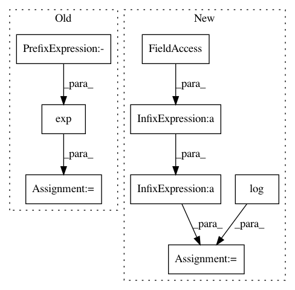

5c0ed104b2890c609bdadfe0fcb0e836ba7a6ef1,test/test_unbalanced.py,,test_unbalanced_convergence,#Any#,13
Before Change
M = ot.dist(x, x)
epsilon = 1.
alpha = 1.
K = np.exp(- M / epsilon)
G, log = ot.unbalanced.sinkhorn_unbalanced(a, b, M, reg=epsilon, alpha=alpha,
stopThr=1e-10, method=method,
log=True)
loss = ot.unbalanced.sinkhorn_unbalanced2(a, b, M, epsilon, alpha,
method=method)
// check fixed point equations
fi = alpha / (alpha + epsilon)
v_final = (b / K.T.dot(log["u"])) ** fi
u_final = (a / K.dot(log["v"])) ** fi
np.testing.assert_allclose(
u_final, log["u"], atol=1e-05)
After Change
// check fixed point equations
// in log-domain
fi = mu / (mu + epsilon)
logb = np.log(b + 1e-16)
loga = np.log(a + 1e-16)
logKtu = logsumexp(log["logu"][None, :] - M.T / epsilon, axis=1)
logKv = logsumexp(log["logv"][None, :] - M / epsilon, axis=1)
v_final = fi * (logb - logKtu)
u_final = fi * (loga - logKv)
np.testing.assert_allclose(
u_final, log["logu"], atol=1e-05)
In pattern: SUPERPATTERN
Frequency: 4
Non-data size: 8
Instances
Project Name: rflamary/POT
Commit Name: 5c0ed104b2890c609bdadfe0fcb0e836ba7a6ef1
Time: 2019-07-22
Author: hicham.janati@inria.fr
File Name: test/test_unbalanced.py
Class Name:
Method Name: test_unbalanced_convergence
Project Name: nipy/dipy
Commit Name: acdb39c2f40fa90a033e895f09d8d02b02e85e9b
Time: 2016-08-29
Author: rafaelnh21@gmail.com
File Name: dipy/reconst/fwdti.py
Class Name:
Method Name: nlls_fit_tensor
Project Name: rflamary/POT
Commit Name: cfdbbd21642c6082164b84db78c2ead07499a113
Time: 2019-08-28
Author: hicham.janati@inria.fr
File Name: test/test_unbalanced.py
Class Name:
Method Name: test_unbalanced_convergence
Project Name: nipy/dipy
Commit Name: ede16d13e33e1fa0708e2547abee9a9c7dace1d1
Time: 2016-08-29
Author: rafaelnh21@gmail.com
File Name: dipy/reconst/fwdti.py
Class Name:
Method Name: nlls_fit_tensor